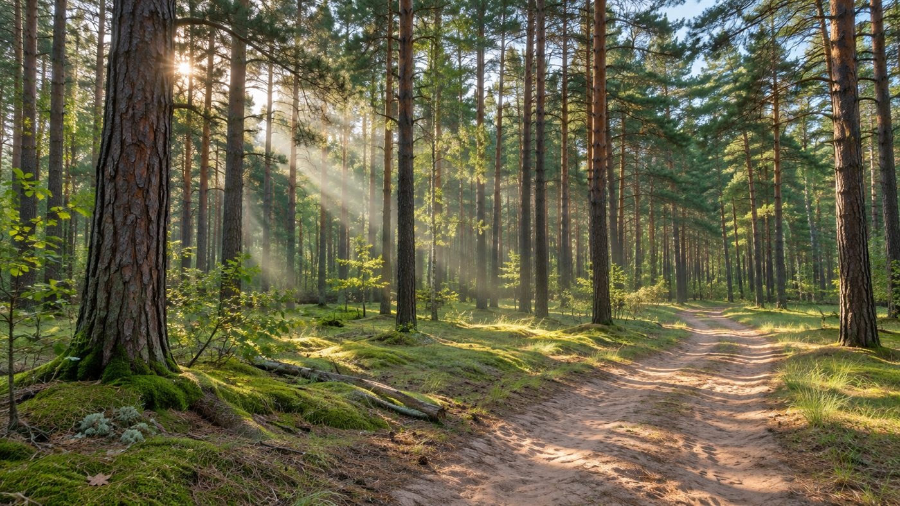
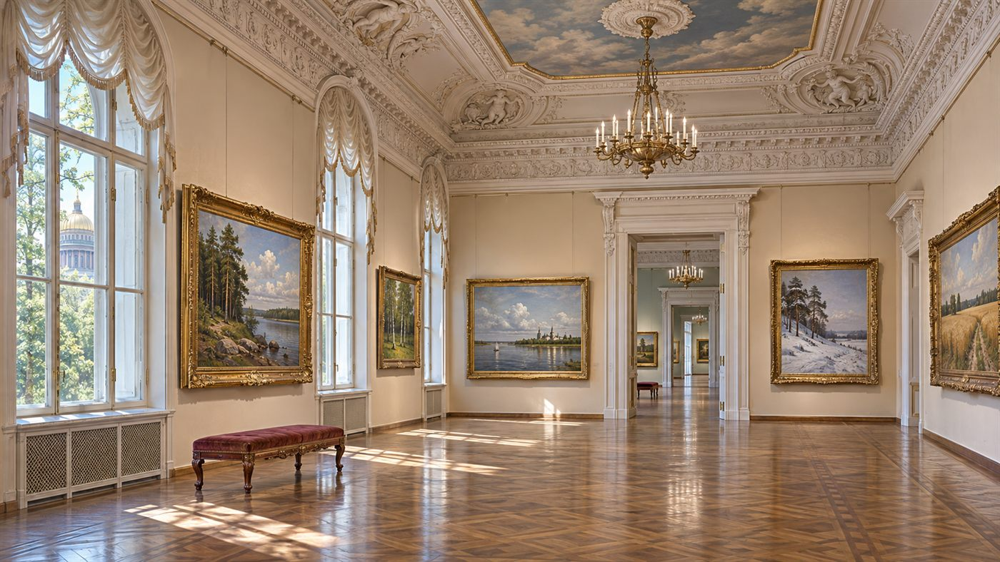
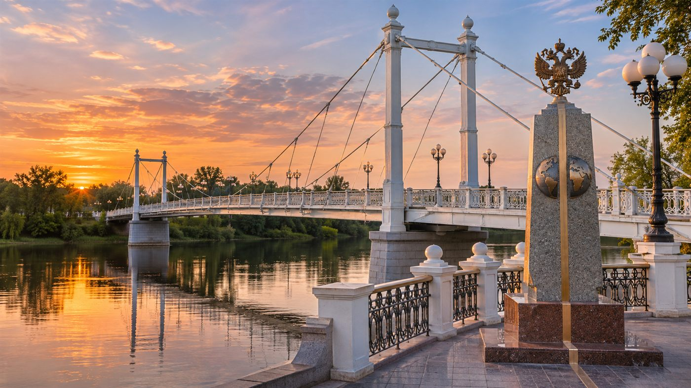
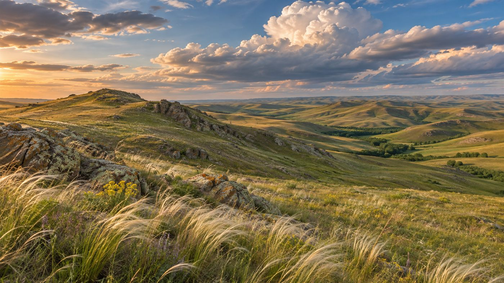
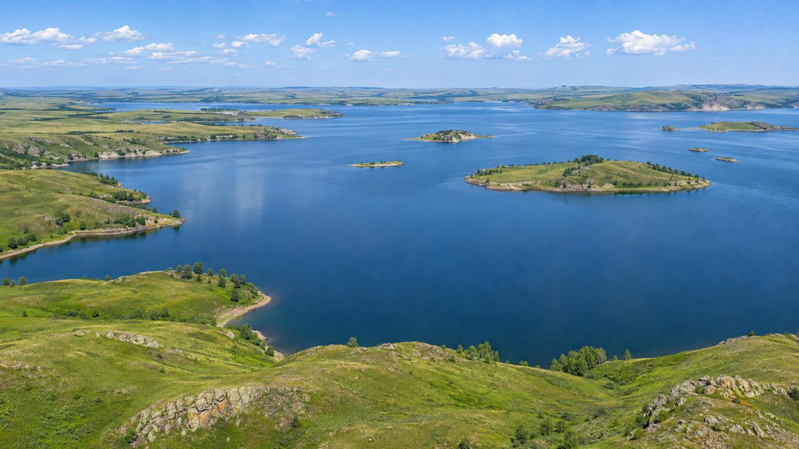
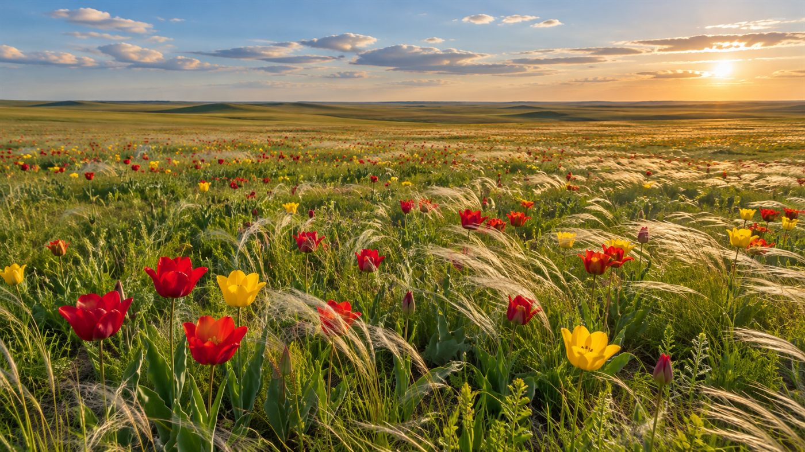

Природный объект
Платформа для сбора и представления информации о достопримечательностях Оренбургской области. Создана для туристов и путешественников от 16 лет и старше, а также для краеведов Оренбуржья. Делитесь любимыми местами, находите новые маршруты и вдохновляйте других путешественников.
Начните вводить название категории или достопримечательности — подсказки появятся автоматически.
Доступные категории: памятники архитектуры, природные объекты, музеи, исторические места.Всё, что нужно для удобного путешествия по Оренбуржью.
Загружайте снимки достопримечательностей в пару кликов — изображения автоматически оптимизируются.
Каждая достопримечательность отмечена на карте, чтобы вы не сбились с маршрута.
Краеведы и жители области делятся историями и деталями, которых нет в путеводителях.
Свежие отзывы и оценки помогают выбрать лучшее место для поездки.
«Открой Оренбуржье» будет полезна разным посетителям от 16 лет и старше.
Готовые маршруты, фотографии и отзывы помогают спланировать поездку по области.
Добавляйте достоверные сведения о памятниках, музеях и природных объектах.
Понятные описания и подсказки по инфраструктуре для спокойного семейного отдыха.
Материал для докладов, экскурсий и изучения истории родного края.
Идеи для съёмок и вдохновляющие виды Оренбургской области в любое время года.
Возможность рассказать о любимых местах и поддержать туризм в регионе.
Пять мест, которые чаще всего выбирают путешественники.




Слайдер переключается стрелками или точками — только средствами CSS.



Проект поддерживают музеи, заповедники и администрации области.